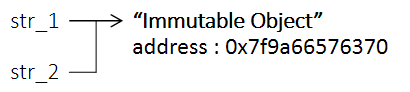
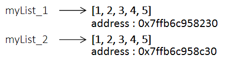
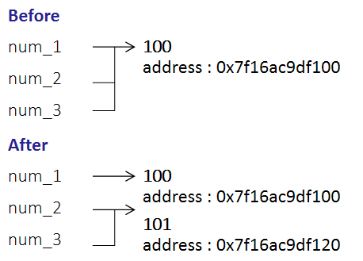
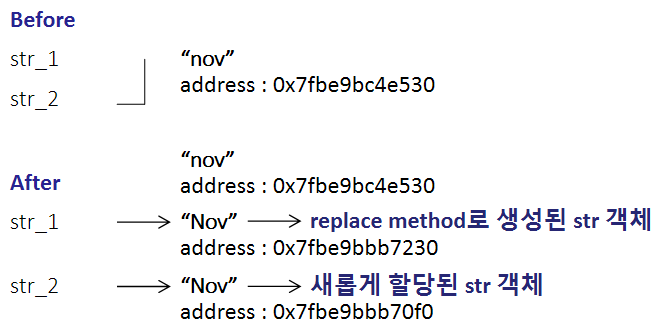
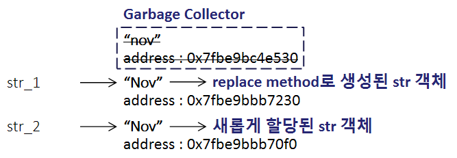

Python 언어는 객체를 Mutable Object와 Immutable Object 두 가지로 구분합니다.
Mutable Object란 상태를 변경 가능한 객체로 대표적으로 List, Set, Dictionary .. 등이 있으며 Immutable Object는 상태를 변경 불가능한 객체로 Int, Float, Tuple, Str, Bool Type 등이 존재합니다.
?Index
#1 Immutable Object & Mutable Object
#2 Immutable Object와 Mutable Object의 객체 참조
#3 Immutable Object는 항상 값이 같은 경우에 동일한 객체를 참조하는가?
#1 Immutable Object & Mutable Object
Immutable Object는 상태 즉, 값을 변경할 수 없기에 객체의 불변성과 안정성을 보장할 수 있으며 값이 동일한 경우 객체를 복제하지 않고 같은 주소를 참조하기에 메모리를 절약할 수 있다는 장점이 있습니다.
하지만 객체의 값을 변경 하고자 하는 경우에는 기존 객체를 수정하지 못하기에 또 다른 객체를 만들어 할당 해야만 합니다. 그렇기에 오히려 객체의 값을 변경해야 하는 상황이나 데이터가 큰 객체를 사용하는 경우에는 메모리 사용량이 늘어날 수 있다는 단점이 있습니다.
Mutable Object는 Immutable Object와 달리 상태를 변경할 수 있습니다. 따라서 객체의 불변성과 안정성을 보장받을 수 없기에 주의가 필요합니다.
그러나 Mutable Object는 원본 객체를 수정할 수 있기에, 객체의 값의 변경이 빈번하게 일어나는 상황에서는 오히려 성능상 이점을 얻을 수 있습니다.
#2 Immutable Object 와 Mutable Object 의 객체 참조
Immutable Object는 값이 같은 경우 항상 동일한 곳을 참조합니다.
str_1과 str_2는 Immutable Object인 str type "Immutable Object"를 참조하기에 새로운 객체를 만들지 않고, 객체를 하나 만 생성한 뒤 같은 주소를 가리키도록 하여 메모리를 절약 하도록 한 것입니다.
* hex() → 16진수로 변환하여 출력하도록 도와주는 메서드입니다.
* id() → 메모리 주소를 출력하도록 도와주는 메서드입니다.
# immutable Object
# 상태 변경이 불가능한 객체.
# 같은 값을 저장하는 경우 동일한 주소를 참조한다.
print("Immutable Object")
str_1 = "Immutable Object"
str_2 = "Immutable Object"
print(f'str_1 → {hex(id(str_1))}')
print(f'str_2 → {hex(id(str_2))}')
Immutable Object
str_1 → 0x7f9a66576370
str_2 → 0x7f9a66576370
Mutable Object는 값이 동일 하더라도 새로운 객체를 생성하여 각 각 서로 다른 객체의 주소를 참조합니다.
myList_1 과 my_List2 는 Muttable Object인 list Type을 참조하기에 리스트의 형태는 동일하나 같은 주소를 참조하지 않고 서로 다른 주소를 참조합니다.
# mutable Object
# 상태 변경이 가능한 객체.
# 같은 값을 저장하는 경우 새로운 객체를 생성해 다른 주소를 참조한다.
print("Mutable Object")
myList_1 = [1, 2, 3, 4, 5]
myList_2 = [1, 2, 3, 4, 5]
print(f'myList_1 → {hex(id(myList_1))}')
print(f'myList_2 → {hex(id(myList_2))}')

Mutable Object
myList_1 → 0x7ffb6c958230
myList_2 → 0x7ffb6c958c30#3 Immutable Object는 항상 값이 같은 경우에 동일한 주소를 참조하는가?
앞서 Immutable Object는 상태를 변경할 수 없는 객체이기에, 값이 동일한 경우에는 객체를 새로 생성하지 않고 동일한 주소를 가리킨다고 말씀 드렸습니다. 그렇다면 Immutable Object는 값이 동일하다면 언제나 같은 주소를 참조할까요?
결론부터 말하자면 "대체로 그렇지만 항상 그런 것은 아닙니다."
그 이유는 특정 함수의 동작 방식으로 인해 발생합니다.
예시로 다음 코드를 보면 num_2와 num_3의 값이 100에서 101로 변경됨에 따라 101 값을 담고있는 새로운 객체를 생성하여 num_2와 num_3는 새롭게 생성된 객체를 가리킵니다.
이것이 일반적인 Immutable Object의 동작 방식입니다.
num_1 = 100
num_2 = 100
num_3 = 100
print(f"Before")
print(f"num_1 → {hex(id(num_1))}")
print(f"num_2 → {hex(id(num_2))}")
print(f"num_3 → {hex(id(num_3))}")
num_2 += 1
num_3 += 1
print(f"After")
print(f"num_1 → {hex(id(num_1))}")
print(f"num_2 → {hex(id(num_2))}")
print(f"num_3 → {hex(id(num_3))}")
Before
num_1 → 0x7f16ac9df100
num_2 → 0x7f16ac9df100
num_3 → 0x7f16ac9df100
After
num_1 → 0x7f16ac9df100
num_2 → 0x7f16ac9df120
num_3 → 0x7f16ac9df120
그러나 다음 코드를 보면 str_1, str_2 는 Str Type Immutable Object 임에도 불구하고, 서로 같은 값인 "Nov"를 가리키는데 참조하는 주소가 서로 다릅니다.
이는 replace() method의 동작 방식에서 기인합니다. replace()는 문자열의 특정 값을 변경해 주는 메서드 입니다. 하지만
str type은 Immutable Object 이기에 상태의 변경은 불가능 합니다.
따라서 replace() 함수는 원본 문자열의 값을 직접 수정하는 것이 아닌 변경된 새로운 문자열 객체를 생성하여 반환합니다.
그렇기에 str_1과 str_2는 최종적으로 다른 주소를 참조하게 됩니다.

print("Before")
str_1 = "nov"
str_2 = "nov"
print(f"str_1 → {hex(id(str_1))}")
print(f"str_2 → {hex(id(str_1))}")
print("After")
str_1 = str_1.replace('n', 'N')
str_2 = "Nov"
print(f"str_1 → {hex(id(str_1))}")
print(f"str_2 → {hex(id(str_2))}")
기존의 "nov" 객체는 이제 아무런 변수도 참조하지 않기에 Python의 Garbage Collector가 메모리 누수를 막기 위하여 필요 없어진 쓰레기 객체인 "nov" 문자열 객체를 수집해 가게 됩니다.

* 본 포스팅은 개인적인 공부 내용을 기록하기 위해 작성한 글 이기에, 잘못된 내용을 포함하고 있을 수 있습니다.
혹여나 틀린 내용이 있다면 댓글로 남겨 주시면 바로 수정 하도록 하겠습니다. ?